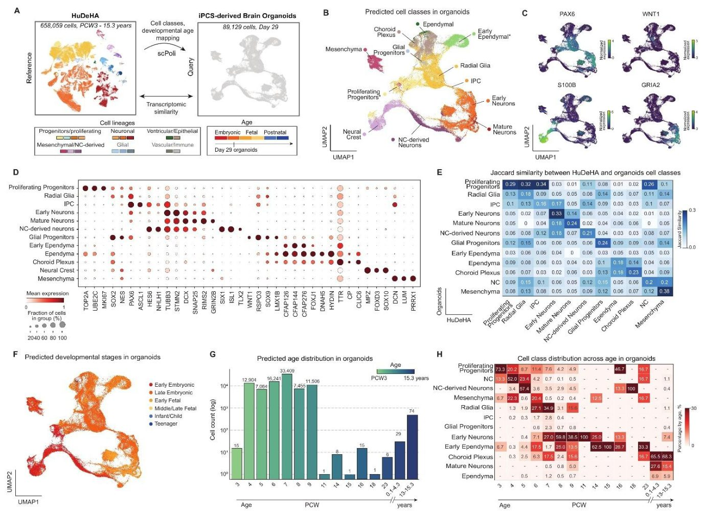
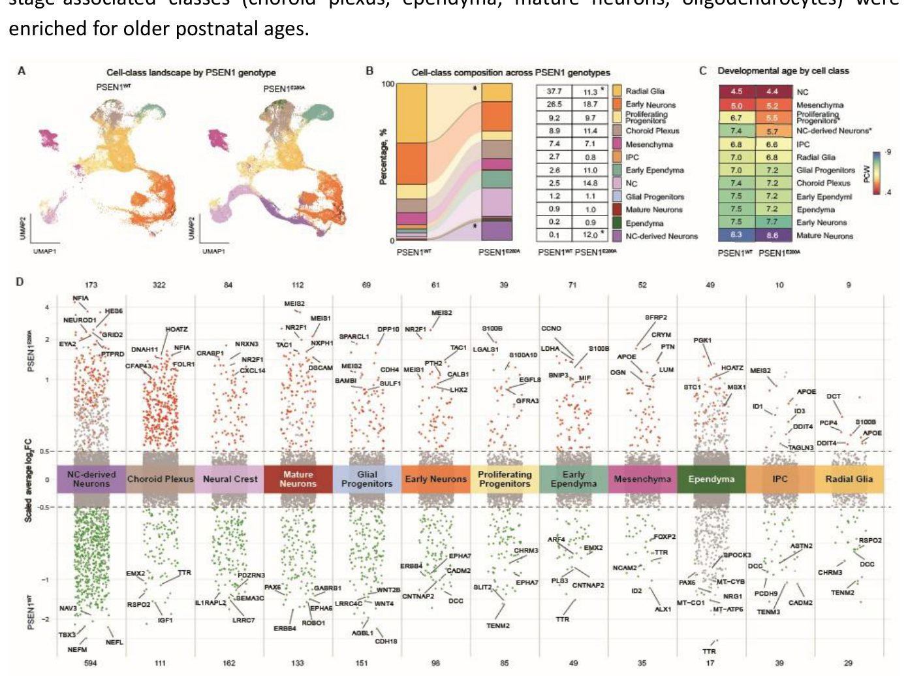
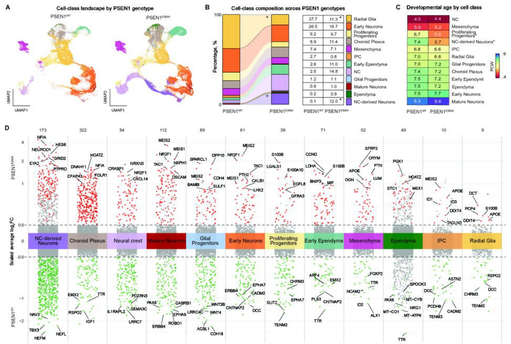
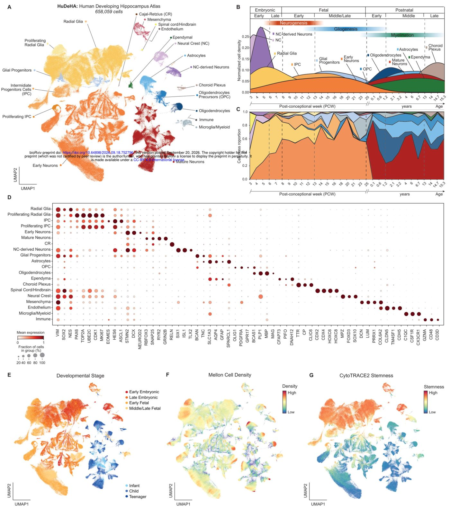
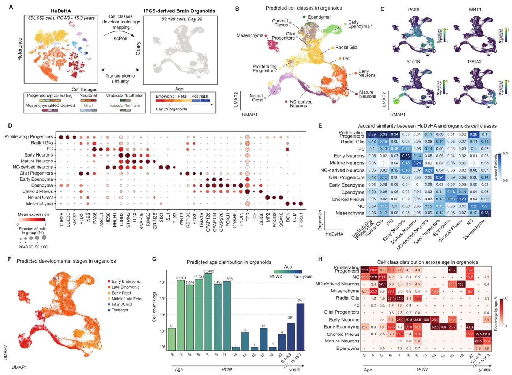

Inson gipokampusining rivojlanish xaritasi va Altsgeymer kasalligi
) gippokamp rivojlanishining embrional davrdan to tugʻruqdan keyingi bosqichlargacha boʻlgan](../../media/2026-09-22/a-lifespan-single-cell-atlas-of-the-human-developing-hippoca-f1.jpg)
Rasmning to'liq tavsifi
1-rasm. Inson rivojlanayotgan gippokampi atlasi (HuDeHA) gippokamp rivojlanishining embrional davrdan to tugʻruqdan keyingi bosqichlargacha boʻlgan vaqtinchalik dinamikasini aks ettiradi. (A) 20 ta izohlangan hujayra sinfini koʻrsatuvchi inson rivojlanayotgan gippokamp atlasining (HuDeHA; 658 059 hujayra) UMAP-embeddingi. Atlas radial glia va oraliq hujayra-oʻtmishdoshlaridan (IPC) boshlab, erta va yetuk neyronlargacha boʻlgan neyronal liniyani, shuningdek, radial glia va IPClarning koʻpayish holatlarini; glia oʻtmishdoshlari, oligodendrositlar oʻtmishdoshlari (OPC), oligodendrositlar va astrositlardan iborat glial liniyani; ektodermal neyronal boʻlmagan populyatsiyalarni (ependima va xoroid pleksus); neyral tizma (NC) va NCdan hosil boʻlgan neyronlarni; ektodermal boʻlmagan populyatsiyalarni (mezenximal, endotelial, mikrogliyal/miyeloid va boshqa immun hujayralar) va orqa miya/orqa miya bilan bogʻliq kichik guruhni qamrab oladi. (B) Rivojlanish davomida (kontsepsiyadan keyingi 3-haftadan (PCW) 15,3 yoshgacha) hujayra sinflari ulushining zichligi, neyrogenezdan gliogenezga va tugʻruqdan keyingi hujayra sinflarining paydo boʻlishiga oʻtishni koʻrsatadi: radial glia va NC embrional namunalarda ustunlik qiladi; IPC va glia oʻtmishdoshlari fetal bosqichlarda paydo boʻladi, yetuk neyronlar esa astrositlar va oligodendrositlar bilan birga tugʻruqdan keyin ustunlik qiladi. (C) Rivojlanish davomida alohida hujayra sinflarining proportsional dinamikasi, rivojlanish yoshi boʻyicha ajratilgan. (B) ga qoʻshimcha ravishda, bu koʻrinish alohida sinflarning paydo boʻlishi va kamayish vaqtini taʼkidlaydi: radial glia va erta neyronlarning embrional ustunligi, NCdan hosil boʻlgan hujayralarning bosqichma-bosqich yoʻqolishi va glia oʻtmishdoshlarining kengayishi, shuningdek, yetuk neyronlarning OPC, oligodendrositlar va astrositlar bilan birga tugʻruqdan keyingi ustunligi. (D) Barcha 20 ta izohlangan hujayra sinflari boʻyicha kanonik markerlarning ifodalanishini koʻrsatuvchi nuqtali diagramma (dotplot): radial glia (VIM, SOX2), IPC (EOMES), koʻpayayotgan radial glia va IPC (TOP2A, MKI67), erta (DCX) va yetuk neyronlar (SNAP25), Kaxal-Retsius (CR) neyronlari (RELN), glia oʻtmishdoshlari (BCAN), OPC (OLIG1), oligodendrositlar (MBP), astrositlar (GFAP), ektodermal neyronal boʻlmagan populyatsiyalar – ependima (PIFO), xoroid pleksus (TTR), NC (MPZ) va NCdan hosil boʻlgan neyronlar (ISL1), mezenxima (DCN), endoteliy (CLDN5), mikrogliya (CX3CR1) va immun hujayralar (CD3D), orqa miya/orqa miya guruhi (CDX2/4).
Gippokamp xotira va fazoviy yo‘nalish uchun javobgar bo‘lgan miya qismidir. Tadqiqotchilar ushbu tuzilmaning embrion davridan kattalar yoshigacha bo‘lgan rivojlanish atlasini yaratdilar. Ushbu ish sog‘lom miya rivojlanishini irsiy Altsgeymer kasalligini modellashtiruvchi organoidlar bilan solishtirish imkonini beradi.
Asosiysi
- Inson gippokampining yagona hujayra darajasidagi rivojlanish atlasi yaratildi
- Neyronlar va glial hujayralarning yetilish bosqichlari aniqlandi
- Altsgeymer kasalligi organoidlari rivojlanish etalonlari bilan solishtirildi
Batafsil
Mualliflar inson gippokampining ontogenez bosqichlaridagi transkriptom profilini tahlil qilish uchun yagona hujayrali RNK sekvenlash (scRNA-seq) usulidan foydalandilar. Tadqiqot keng vaqt oralig‘ini qamrab olib, neyronlar va glial hujayralarning turli turlari uchun o‘ziga xos molekulyar markerlarni aniqlashga imkon berdi. Sinaptik plastika va neyrogenez bilan bog‘liq genlar ekspressiyasining dinamikasiga alohida e’tibor qaratildi.
Olingan ma’lumotlar Altsgeymer kasalligi bilan og‘rigan bemorlarning induksiyalangan pluripotent o‘zak hujayralaridan (iPSC) olingan miya organoidlari sifatini baholash uchun mezon bo‘lib xizmat qildi. Taqqoslash laboratoriya modellari inson miyasi rivojlanish naqshlarini qanchalik aniq takrorlashini ko‘rsatdi. Bu neyronlar nobud bo‘lishidan oldin yuz beradigan dastlabki molekulyar og‘ishlarni aniqlashga yordam beradi.
Cheklovlar
Tadqiqot organoidlarni atlas bilan solishtirishga asoslangan, ammo organoidlar miyaning murakkab arxitekturasi va qon aylanishini to‘liq takrorlamaydi.
Maqolaning batafsil tahlili
Annotatsiya
Oila aʼzolarida uchraydigan Altsgeymer kasalligi (fAD) APP, PSEN1 yoki PSEN2 genlaridagi avtosomal-dominant variantlar tufayli kelib chiqadigan erta boshlanuvchi shakldir, bunda PSEN1 eng koʻp uchraydigan genetik sabab hisoblanadi. Gippokamp Altsgeymer kasalligida eng birinchi va eng qattiq shikastlanadigan miya hududlaridan biridir. Induksiyalangan pluripotent oʻzak hujayralaridan (iPSC) olingan miya organoidlari miya rivojlanishining dastlabki bosqichlarini takrorlaydi va fAD mutatsiyalarining neyrorivojlanish jarayonlariga taʼsirini oʻrganish uchun qulay model hisoblanadi. Biroq, ularni talqin qilish turli protokollar boʻyicha mintaqaviy oʻziga xoslik, yetilish darajasi va hujayra tarkibidagi tafovutlar tufayli murakkablashadi.
Izoh
iPSC-organoidlar — bemorning oʻzak hujayralaridan yetishtirilgan uch oʻlchamli tuzilmalar boʻlib, ular miya rivojlanishini modellashtiradi.
Inson gippokampining mavjud yagona hujayrali tadqiqotlari prenatal va postnatal bosqichlarni qamrab oladi, ammo rivojlanishning uzluksiz maʼlumotnomasini taqdim etmaydi. Ushbu muammoni hal qilish uchun Inson rivojlanayotgan gippokamp atlasi (HuDeHA) yaratildi.
HuDeHA atlasi konsepsiyadan keyingi 3-haftadan 15,3 yoshgacha boʻlgan davrni qamrab olgan 658 059 ta hujayrani oʻz ichiga olgan integratsiyalashgan maʼlumotlar bazasidir. Ushbu resurs Kolumbiya aholisida keng tarqalgan PSEN1E280A mutatsiyasini olib yuruvchi iPSC-organoidlarini baholash uchun ishlatildi. Qiyosiy tahlil shuni koʻrsatdiki, PSEN1E280A mutatsiyasiga ega organoidlarda hujayra tarkibi oʻzgargan: radial glia hujayralarining kamayishi va nerv tizmasidan kelib chiqqan neyronlarning koʻpayishi kuzatilgan.
Muhim
HuDeHA doirasida 658 059 ta hujayrani tahlil qilish natijasida PSEN1E280A mutatsiyasi radial glia populyatsiyasining kamayishiga va yetuk neyron holatlariga gʻayritabiiy siljishga olib kelishi aniqlandi.
Ushbu oʻzgarishlar transkripsion siljishlar bilan birga kechdi: ventral naqshlash omili MEIS2 ning keng miqyosda faollashuvi va tomirli chigal (choroid plexus) hamda ependimal hujayralarda amiloid-beta bogʻlovchi TTR oqsilining kamayishi kuzatildi. Neyron liniyalari rivojlanish trayektoriyalarini rekonstruksiya qilish mutant organoidlarda yetuk holatlarga tomon siljish borligini koʻrsatdi.
Ehtiyot bo'ling
Tadqiqot organoidlarni etalon atlas bilan solishtirishga asoslangan; in vitro natijalari tirik organizmdagi murakkab neyrodegeneratsiya jarayonlarini toʻliq aks ettirmasligi mumkin.
Kirish
Oila boʻylab oʻtadigan Altsgeymer kasalligi va organoidlar modeli
Oila boʻylab oʻtadigan Altsgeymer kasalligi (fAD) APP, PSEN1 yoki PSEN2 genlaridagi autosom-dominant variantlar tufayli yuzaga keladi, bunda PSEN1 erta boshlanadigan irsiy kasallikning eng koʻp uchraydigan genetik sababidir. Patogen PSEN1 variantlari γ-sekretaza vositachiligidagi Aβ ishlab chiqarishni oʻzgartiradi, bu koʻpincha uzunroq va agregatsiyaga moyil boʻlgan Aβ turlarining koʻpayishiga hamda Aβ42/Aβ40 nisbatining oshishiga olib keladi. Ushbu mutatsiyalar inson rivojlanishining qaysi bosqichida hujayra dasturlarini buzishni boshlashi nomaʼlum.
Muhim
PSEN1 genidagi mutatsiyalar Aβ ishlab chiqarishni agregatsiyaga moyil shakllar tomon oʻzgartiradi, ammo bu oʻzgarishlarning miya rivojlanishiga taʼsiri hali toʻliq oʻrganilmagan.
Indutsirlangan pluripotent oʻzak hujayralardan (iPSC) olingan miya organoidlari inson nerv tizimining erta rivojlanishini aniq genetik sharoitlarda modellashtirish imkonini beradi. Ushbu uch oʻlchamli tuzilmalar toʻqimalarning shakllanishi va neyronlarning yetilish jarayonlarini takrorlaydi. Oldingi tadqiqotlar asosan amiloid almashinuvi, tau-patologiyasi va sinaptik buzilishlarga qaratilgan boʻlib, mutatsiyalarning erta rivojlanish va hujayra liniyalarining differensiatsiyasiga taʼsiri kam oʻrganilgan.
Izoh
Organoidlar — bu rivojlanayotgan organ, xususan, miya tuzilishi va funksiyalarini taqlid qiluvchi uch oʻlchamli hujayra modellari.
Inson gippokampi rivojlanishi atlasi (HuDeHA)
Organoidlar maʼlumotlarini talqin qilish ularning geterogenligi va hujayralarning toʻliq yetilmaganligi sababli qiyin kechadi, bu esa genotip effektlarini toʻqima tarkibidagi tasodifiy farqlardan ajratishni qiyinlashtiradi. Ushbu muammoni hal qilish uchun «Inson gippokampi rivojlanishi atlasi» (HuDeHA) yaratildi. U 658 059 ta hujayrani oʻz ichiga olgan boʻlib, urugʻlanishdan keyingi 3-haftadan (PCW3) 16-haftagacha (PCW16), shuningdek, keyingi fetal va postnatal bosqichlarni oʻsmirlik davrigacha qamrab oladi.
Ehtiyot bo'ling
Organoidlar toʻliq miya emas: ular noturgʻun hujayra turlarini oʻz ichiga olishi va toʻliq boʻlmagan differensiatsiyani koʻrsatishi mumkin, shuning uchun ularni rivojlanish atlaslari bilan solishtirish zarur.
HuDeHA dan foydalanish PSEN1E280A mutatsiyasiga ega organoid hujayralarini tizimli ravishda annotatsiya qilish va ularning yetilish bosqichini baholash imkonini berdi. Tahlil shuni koʻrsatdiki, PSEN1E280A mutatsiyali organoidlar radial gliyaning kamayishi, nerv tizimi oʻsigʻidan kelib chiqadigan neyronlarning koʻpayishi va rivojlanish dasturlaridagi oʻziga xos oʻzgarishlar, shuningdek, neyronlarning yetilish bosqichlarida biroz siljish bilan tavsiflanadi.
Natijalar
Inson rivojlanayotgan gippokamp atlasi (HuDeHA) pre- va postnatal davrdagi asosiy hujayra turlarini aniqlaydi
Mualliflar 658 059 ta hujayrani oʻz ichiga olgan 107 ta scRNA-seq maʼlumotlar toʻplamini birlashtirib, rivojlanayotgan inson gippokampi atlasini (HuDeHA) yaratdilar (Rasm 1A; Rasm SN; Jadval SN). Namunalar homiladorlikning 3-haftasidan (PCW3) to oʻsmirlik davrigacha (15,3 yosh) boʻlgan vaqtni qamrab oladi. Tahlil 20 ta asosiy hujayra turini, jumladan neyron, glial, qon tomir va immun hujayralarni ajratib koʻrsatishga imkon berdi (Rasm 1D).
Rasmning to'liq tavsifi
1-rasm. Inson rivojlanayotgan gippokampi atlasi (HuDeHA) gippokamp rivojlanishining embrional davrdan to tugʻruqdan keyingi bosqichlargacha boʻlgan vaqtinchalik dinamikasini aks ettiradi. (A) 20 ta izohlangan hujayra sinfini koʻrsatuvchi inson rivojlanayotgan gippokamp atlasining (HuDeHA; 658 059 hujayra) UMAP-embeddingi. Atlas radial glia va oraliq hujayra-oʻtmishdoshlaridan (IPC) boshlab, erta va yetuk neyronlargacha boʻlgan neyronal liniyani, shuningdek, radial glia va IPClarning koʻpayish holatlarini; glia oʻtmishdoshlari, oligodendrositlar oʻtmishdoshlari (OPC), oligodendrositlar va astrositlardan iborat glial liniyani; ektodermal neyronal boʻlmagan populyatsiyalarni (ependima va xoroid pleksus); neyral tizma (NC) va NCdan hosil boʻlgan neyronlarni; ektodermal boʻlmagan populyatsiyalarni (mezenximal, endotelial, mikrogliyal/miyeloid va boshqa immun hujayralar) va orqa miya/orqa miya bilan bogʻliq kichik guruhni qamrab oladi. (B) Rivojlanish davomida (kontsepsiyadan keyingi 3-haftadan (PCW) 15,3 yoshgacha) hujayra sinflari ulushining zichligi, neyrogenezdan gliogenezga va tugʻruqdan keyingi hujayra sinflarining paydo boʻlishiga oʻtishni koʻrsatadi: radial glia va NC embrional namunalarda ustunlik qiladi; IPC va glia oʻtmishdoshlari fetal bosqichlarda paydo boʻladi, yetuk neyronlar esa astrositlar va oligodendrositlar bilan birga tugʻruqdan keyin ustunlik qiladi. (C) Rivojlanish davomida alohida hujayra sinflarining proportsional dinamikasi, rivojlanish yoshi boʻyicha ajratilgan. (B) ga qoʻshimcha ravishda, bu koʻrinish alohida sinflarning paydo boʻlishi va kamayish vaqtini taʼkidlaydi: radial glia va erta neyronlarning embrional ustunligi, NCdan hosil boʻlgan hujayralarning bosqichma-bosqich yoʻqolishi va glia oʻtmishdoshlarining kengayishi, shuningdek, yetuk neyronlarning OPC, oligodendrositlar va astrositlar bilan birga tugʻruqdan keyingi ustunligi. (D) Barcha 20 ta izohlangan hujayra sinflari boʻyicha kanonik markerlarning ifodalanishini koʻrsatuvchi nuqtali diagramma (dotplot): radial glia (VIM, SOX2), IPC (EOMES), koʻpayayotgan radial glia va IPC (TOP2A, MKI67), erta (DCX) va yetuk neyronlar (SNAP25), Kaxal-Retsius (CR) neyronlari (RELN), glia oʻtmishdoshlari (BCAN), OPC (OLIG1), oligodendrositlar (MBP), astrositlar (GFAP), ektodermal neyronal boʻlmagan populyatsiyalar – ependima (PIFO), xoroid pleksus (TTR), NC (MPZ) va NCdan hosil boʻlgan neyronlar (ISL1), mezenxima (DCN), endoteliy (CLDN5), mikrogliya (CX3CR1) va immun hujayralar (CD3D), orqa miya/orqa miya guruhi (CDX2/4).
Muhim
HuDeHA atlasi 658 059 ta hujayrani 20 ta turga ajratadi, bu homiladorlikning 3-haftasidan 15,3 yoshgacha boʻlgan davrda neyrogenezdan gliogenezga oʻtishni aks ettiradi.
Neyroektodermal chiziq radial gliya (194 105 hujayra; VIM, SOX2, NES markerlari) va uning proliferativ subpopulyatsiyasini (11 390 hujayra; TOP2A, MKI67, UBE2C, CDK1) oʻz ichiga oladi. Keyin oraliq progenitor hujayralar (IPC; 15 033 hujayra; EOMES, ASCL1) va ularning proliferativ guruhi (3 860 hujayra) keladi. Ular erta neyronlarga (246 627 hujayra; DCX, NEUROD2, ELAVL3) va yetuk neyronlarga (95 335 hujayra; RBFOX3, SNAP25, SYT1) differensiatsiyalanadi. Shuningdek, Kaxal-Retsius neyronlari (170 hujayra; RELN) aniqlangan.
Izoh
scRNA-seq (yagona hujayra RNK sekvenirovi) — har bir alohida hujayradagi genlar faolligini aniqlash usuli boʻlib, u kam uchraydigan hujayra turlari va ularning rivojlanish yoʻllarini aniqlashga yordam beradi.
Glial chiziq progenitorlar (8 536 hujayra; BCAN, TNC), oligodendrositlar (7 908 hujayra; PLP1, MBP), ularning progenitorlari (OPC; 11 483 hujayra; OLIG1, PDGFRA) va astrositlardan (15 701 hujayra; GFAP, AQP4) iborat. Qoʻshimcha ravishda ependimal hujayralar (2 200 hujayra), xoroid pleksus hujayralari (2 119 hujayra), shuningdek, nerv tizmasi (NC; 10 036 hujayra) va undan hosil boʻlgan neyronlar (6 302 hujayra) tasvirlangan. Noektodermal populyatsiyalar mezenxima (8 052 hujayra), endoteliy (228 hujayra), mikrogliya (4 876 hujayra) va boshqa immun hujayralarni (160 hujayra) oʻz ichiga oladi. Shuningdek, orqa miya/orqa miya bilan bogʻliq kichik hujayralar guruhi (480 hujayra; CDX2, CDX4) topilgan (Rasm 1D).
PCW3 dan 15,3 yoshgacha boʻlgan hujayra tarkibining dinamikasi shuni koʻrsatadiki, erta embrional bosqichlar radial gliya va nerv tizmasi hujayralariga boy, postnatal davrda esa yetuk neyronlar va differensiatsiyalangan glial hujayralar ustunlik qiladi (Rasm 1B, C; Rasm SN). CytoTRACE2 yordamida rivojlanish potentsialini baholash proliferativ progenitorlardan (median 0,57) yetuk neyronlargacha (median 0,05) ballarning pasayishini koʻrsatdi, bu differensiatsiya jarayonida plastisiyaning yoʻqolishini tasdiqlaydi (Rasm 1G; Rasm SN).
Ehtiyot bo'ling
Tadqiqot mavjud maʼlumotlarni integratsiya qilishga (meta-tahlil) asoslangan, shuning uchun natijalar dastlabki namunalarning sifati va hujayra turlari annotatsiyasining aniqligiga bogʻliq.
HuDeHA fAD organoidlari maʼlumotlarini referens asosida xaritalash imkonini beradi
Tahlil uchun iPSC'dan olingan miya organoidlarining scRNA-seq maʼlumotlar toʻplamidan foydalanildi, u toʻrtta genotipni oʻz ichiga oladi: PSEN1WT/APOEWT, PSEN1WT/APOECh, PSEN1E280A/APOEWT va PSEN1E280A/APOECh. Maʼlumotlar ikki donor iPSC fonidan olingan sakkizta CRISPR hujayra liniyasidan yaratilgan sakkizta kutubxonadan iborat edi (ketma-ketlikdan oldin har bir liniya uchun oltita organoid birlashtirilgan). Biz scPoli — referens HuDeHA dan organoid maʼlumotlariga hujayra turlari yorliqlarini oʻtkazish uchun yarim nazoratli neyron tarmoq modelini qoʻlladik (2A-rasm). Bu usul progenitorlar, neyronlar, epitelial/ventrikulyar, mezenximal va NC-hujayralar liniyalarini ajratish imkonini berdi (2B-rasm). Ushbu bosqichda differensiyalangan glial yoki immun/qon tomir populyatsiyalari aniqlanmadi.
Muhim
scPoli usuli organoid hujayralarini tasniflash imkonini berdi, bunda erta neyronlar (19 131 hujayra) va radial glia (18 384 hujayra) ustunligi, IPC (1 308) va yetuk neyronlar (877) esa kamchilikni tashkil etishi aniqlandi.
Izoh
scPoli — bu yangi tajriba maʼlumotlarini allaqachon maʼlum boʻlgan «atlas» (referens) bilan solishtirib, namunadagi hujayra turlarini avtomatik aniqlaydigan mashinali oʻrganish vositasi.
IPC populyatsiyasi ASCL1 va HES6 ni ifodaladi, EOMES esa hujayralarning 1% dan kamrogʻida aniqlandi. Erta neyronlar TUBB3, STMN2, DCX ni, yetuk neyronlar esa GRIN2B va GRIA2 ni ifodaladi (2C, D-rasm). S100B signali, shuningdek, MPZ, FOXD3 va SOX10 markerlari NC-kompartmenti bilan bogʻliq edi (2B, C, D-rasm).
Maxsus populyatsiyalar tahlili va annotatsiya aniqligi
Ependima va glial progenitorlar kabi baʼzi guruhlar annotatsiyaning yuqori noaniqlik koʻrsatkichlariga ega edi (S2A-rasm). Biz HuDeHA da mavjud boʻlmagan, CFAP (CFAP126, CFAP144, CFAP276, CFAP141, CFAP90) bilan boyitilgan populyatsiyani aniqladik va uni «erta ependimal» deb tasnifladik (S2B-rasm). Bu hujayralar FOXJ1 ni ifodaladi, ammo kipriklar yigʻilishi uchun asosiy genlar toʻplamiga ega emas edi. Glial progenitorlar LMX1A/B, MSX1, GDF7 va WNT1/3A markerlarini namoyish etdi (2C-rasm, S2C-rasm), ammo kanonik markerlar TNC, BCAN va NFIB zaif ifodalangan yoki yoʻq edi (S2D-rasm).
Ehtiyot bo'ling
Baholash in vitro organoidlarida oʻtkazildi; gen ifodasidagi farqlar in vivo toʻqimalariga nisbatan toʻliq boʻlmagan differensiyani koʻrsatadi.
Oʻxshashlikni baholash uchun Jakkard indeksi va Pirson korrelyatsiyasidan foydalanildi (2E-rasm, S3A-C-rasm). Referens bilan eng katta oʻxshashlikni mezenximal hujayralar (Jakkard indeksi = 0,38) va erta neyronlar (0,32) koʻrsatdi. Progenitor populyatsiyalar kengroq qoplanishni namoyish etdi (Jakkard indeksi 0,29–0,32). Erta ependimal hujayralar barcha referens sinflar bilan past oʻxshashlikka ega edi, bu ularning organoidlarga xos populyatsiya sifatidagi maqomini tasdiqlaydi. Nazorat guruhlari (astrositlar, OPC, oligodendrositlar, mikrogliya) organoid hujayralari bilan sezilarli oʻxshashlik koʻrsatmadi (S3B-rasm).
HuDeHA rivojlanish yoshi annotatsiyalaridan foydalanib, biz fAD organoidlari maʼlumotlar to‘plamida rivojlanish bosqichlari o‘xshashligini bashorat qilish uchun scPoli usulini qo‘lladik. Bashorat qilingan organoid holatlari erta prenataldan postnatal bosqichlargacha bo‘lgan HuDeHA mos yozuvlar diapazonini qamrab oldi (Rasm 2F). Aksariyat organoid hujayralari erta prenatal bosqichlarga, xususan PCW4–PCW9 ga to‘g‘ri keldi, atigi 1% ga yaqini PCW11 yoki undan keyingi rivojlanish bosqichlariga, shu jumladan postnatal yoshga mos keldi (Rasm 2G). Har bir hujayra sinfi uchun yosh guruhlariga ajratilgan hujayralar ulushini hisoblab chiqdik va bu naqshlarni issiqlik xaritasi sifatida vizuallashtirdik (Rasm 2H). Natijalar rivojlanish tashkilotiga mos keldi: erta bashorat qilingan yoshlar projenitorga o‘xshash va neyron bo‘lmagan populyatsiyalarda, shu jumladan proliferatsiyalanuvchi projenitorlar, mezenximal hujayralar va NC hujayralarida boyigan, keyingi va postnatal yoshdagi bashoratlar esa yetuk neyronlar va ependimal hujayralar kabi differensiyalangan populyatsiyalarda to‘plangan.


Rasmning to'liq tavsifi
2-rasm. HuDeHA bilan bogʻlash iPSCdan olingan miya organoidlarini in vivo gippokamp hujayra holatlari va rivojlanish vaqti bilan solishtirish imkonini beradi. (A) Tahlil ish jarayonining sxemasi. HuDeHA (3 PCW dan 15,3 yoshgacha; 20 ta hujayra sinfi) iPSCdan olingan PSEN1WT va PSEN1E280A inson miya organoidlariga hujayra sinfi va rivojlanish yoshi yorliqlarini scPoli asosida oʻtkazish uchun mos yozuvlar boʻlib xizmat qildi. scPoli mos yozuvlar va soʻrov oʻrtasidagi kesishish genlar toʻplamida (22 467 gen) oʻqitildi va organoid hujayralari yorliqni bashorat qilish uchun oʻrganilgan latent fazoga proyeksiyalandi. (B) HuDeHA dan olingan 12 ta bashorat qilingan hujayra sinfi boʻyicha ranglangan iPSCdan olingan inson miya organoidlarining UMAPi, soʻngra cheklangan qoʻlda tuzatish (usullarga qarang). Yulduzchalar HuDeHAga nisbatan yangi belgilangan yoki birlashtirilgan sinflarni belgilaydi: «erta ependima» (qoʻlda qoʻshilgan, HuDeHAda yoʻq) va «koʻpayayotgan oʻtmishdoshlar» (koʻpayayotgan radial glia va koʻpayayotgan IPC yigʻindisi). (C) Organoidlarning bir hujayrali embeddingi boʻylab tanlangan mintaqaviy va liniya markerlarining xususiyatlar chizmalari (feature plots). PAX6 keng dorsal oʻtmishdoshlar boʻlimini, GRIA2 alohida yetuk neyronal populyatsiyani, S100B asosan NC populyatsiyasini (ependimaga oʻxshash hujayralarda qoʻshimcha ifodalanish bilan), WNT1 esa tom qoplamasi yoki kortikal hoshiya bilan bogʻliq boʻlgan dorsal oʻrta chiziqqa oʻxshash kichik populyatsiyani belgilaydi. (D) Bashorat qilingan organoid hujayra sinflari uchun marker-gen ifodalanishining nuqtali diagrammasi: koʻpayayotgan oʻtmishdoshlar (TOP2A, MKI67); radial glia (SOX2); IPC (ASCL1); erta neyronlar (TUBB3) va yetuk neyronlar (GRIN2B); NCdan hosil boʻlgan neyronlar (ISL1); glia oʻtmishdoshlari (SOX9); erta ependima (CFAP144) va ependima (FOXJ1); xoroid pleksus (TTR); NC (MPZ, FOXD3); va mezenxima (DCN, PRRX1). (E) Har bir sinf uchun eng yuqori 1500 ta differensial ifodalangan (DE) genlar boʻyicha hisoblangan HuDeHA va organoid hujayra sinflari oʻrtasidagi Jakkard oʻxshashligi issiqlik xaritasi, sinfga xos marker-gen dasturlari oʻrtasidagi oʻxshashlikni miqdoriy baholaydi. (F) Rivojlanish bosqichlariga birlashtirilgan bashorat qilingan yosh guruhlari boʻyicha ranglangan organoidlarning UMAPi. (G) Hujayralar soni logarifmik shkalasidagi bashorat qilingan rivojlanish yoshining taqsimoti. Hujayralar bitta organoid yigʻish vaqtida keng rivojlanish geterogenligini qamrab oladi: aksariyat hujayralar PCW4–PCW9 ga toʻgʻri keladi, kichikroq qismi esa tugʻruqdan keyingi bosqichlarga tegishli. (H) Bashorat qilingan yosh guruhlari boʻyicha hujayra sinflari ulushlarining issiqlik xaritasi. Erta bosqich bilan bogʻliq sinflar (koʻpayayotgan oʻtmishdoshlar, NCdan hosil boʻlgan neyronlar) yoshroq prenatal yosh uchun boyitilgan, kechki bosqich bilan bogʻliq sinflar (xoroid pleksus, ependima, yetuk neyronlar, oligodendrositlar) esa keyingi yosh uchun boyitilgan.
Muhim
fAD organoidlari asosan erta rivojlanish bosqichlariga (PCW4–PCW9) mos keladi, differensiyalangan hujayralar esa kutilganidek keyingi yetilish belgilarini ko‘rsatadi.
PSEN1E280A organoidlari hujayra sinfi tarkibi va transkripsion profillarida farqlarni ko‘rsatadi
Biz PSEN1E280A organoidlari PSEN1WT organoidlariga nisbatan hujayra sinfi tarkibida o‘zgarishlar bor-yo‘qligini tekshirdik (Rasm 3A-B). Biz har bir organoid uchun hujayra sinfi nisbatlarini aniqladik va scCODA, yaʼni bir hujayrali hisoblash maʼlumotlarini differensial tarkibiy tahlil qilish uchun Bayes tizimi yordamida statistik yordamni baholadik (Rasm 3B). Bu tahlil mutant organoidlarda WT ga nisbatan NC-dan kelib chiqqan neyronlarning ishonchli o‘sishini va radial gliyaning kamayishini aniqladi. Har bir hujayra sinfi va sharoitida bashorat qilingan yoshni ko‘rib chiqdik (Rasm 3C). Natijada olingan issiqlik xaritasi kutilgan rivojlanish tartibini takrorladi: NC hujayralari, mezenximal hujayralar va proliferatsiyalanuvchi projenitorlar uchun erta bashorat qilingan yoshlar, yetuk neyronlar va xoroid pleksus kabi differensiyalangan populyatsiyalar uchun esa keyingi yoshlar belgilandi. Bashorat qilingan yosh taqsimotlari uchun Cliff’s delta qiymatini hisobladik. Tahlil shuni ko‘rsatdiki, PSEN1E280A organoidlarida proliferatsiyalanuvchi projenitorlar va NC-neyronlari WT organoidlariga qaraganda yoshroq (mos ravishda 5,5 ga nisbatan 6,7 PCW va 5,7 ga nisbatan 7,4 PCW).


Rasmning to'liq tavsifi
3-rasm. PSEN1E280A oʻzgargan liniya balansi va neyronal spetsifikatsiya, oʻtmishdosh va qorincha dasturlarining sinfga xos disregulyatsiyasi bilan bogʻliq. (A) Shartlar boʻyicha boʻlingan (PSEN1WT uchun n = 2 va PSEN1E280A organoidlari uchun n = 6) miya organoidlarining UMAPi, bashorat qilingan hujayra sinfi boʻyicha ranglangan, shartlar oʻrtasidagi hujayra sinfi taqsimotidagi farqlarni koʻrsatadi. (B) Har bir hujayra sinfining shartlar boʻyicha foiz tarkibini koʻrsatuvchi ustunli diagrammalar. Yulduzchalar shartlar oʻrtasida sezilarli darajada farq qiluvchi nisbiy koʻrsatkichlarga ega hujayra sinflarini koʻrsatadi. WT organoidlari bilan solishtirganda, PSEN1E280A organoidlari NCdan hosil boʻlgan neyronlarning yuqori ulushini va radial glianing kamaygan ulushini koʻrsatdi. Oʻng tomondagi jadval har bir shartdagi har bir hujayra sinfining aniq foizini beradi. (C) Butun maʼlumotlar toʻplami boʻyicha oʻrtacha qiymatning kamayishi tartibida hujayra sinfi boʻyicha oʻrtacha bashorat qilingan rivojlanish yoshining issiqlik xaritasi. Yulduzchalar Kliff deltasidan foydalangan holda baholangan shartlar oʻrtasidagi sezilarli yosh farqlariga ega hujayra sinflarini belgilaydi. Chegaralar: tuzatilgan p-qiymati ≤ 0,05. (D) Hujayra sinfi boʻyicha ajratilgan PSEN1E280A va WT organoidlaridagi differensial ifodalangan genlar. Yuqori ifodalangan genlar qizil, past ifodalanganlari yashil rangda koʻrsatilgan; hujayra sinflari DE-genlarning umumiy sonining kamayishi tartibida joylashtirilgan. Har bir sinf uchun eng informativ 10 ta gen belgilangan; log2FC oʻqi vizualizatsiya uchun masshtablangan. Chegaralar: tuzatilgan p-qiymati ≤ 0,05, /log2FC/ ≥ 0,5.
Izoh
scCODA — bu bir hujayrali ketma-ketlik maʼlumotlaridagi hujayra turlari nisbatlarining o‘zgarishini tahlil qilish uchun statistik usul.
Har bir hujayra sinfi ichidagi differensial ifoda tahlili (DEG) NC va NC-neyronlari hamda xoroid pleksusda eng yuqori o‘zgarishlarni ko‘rsatdi (Rasm 3D). Takrorlanuvchi transkripsion o‘zgarishlar orasida MEIS2 yetuk neyronlarda, erta neyronlarda, IPC va glial projenitorlarda yuqori darajada ifodalangan, MEIS1 esa yetuk neyronlarda eng ko‘zga tashlanadigan bo‘lgan. NR2F1 yetuk neyronlar, erta neyronlar va neyral tizma hujayralarida oshgan, TAC1 esa yetuk va erta neyronlarda ko‘tarilgan. NC-neyronlarida HES6 va NEUROD1 NFIA bilan birga kuchli darajada oshgan. Proliferatsiyalanuvchi projenitorlar S100B, LGALS1 va S100A10 ning o‘sishini, SLIT2 va TENM2 ning kamayishini ko‘rsatdi. Radial glia S100B va APOE ning o‘sishini, RSPO2 ning kamayishini ko‘rsatdi. Xoroid pleksus hujayralari TTR, IGF1 va RSPO2 ning kamayishini va FOLR1 ning o‘sishini ko‘rsatdi. Ependimal hujayralar MSX1 ning o‘sishini va mitoxondrial kodlangan transkriptlarning (MT-CO1, MT-CO2, MT-CO3, MT-CYB, MT-ATP6) muvofiqlashtirilgan pasayishini ko‘rsatdi.
Ehtiyot bo'ling
Tadqiqot organoidlarda (in vitro) o‘tkazilgan; kuzatilgan gen ifodasi va hujayra tarkibidagi farqlar inson miya to‘qimalarida tasdiqlanishi kerak.
Yo‘llarni boyitish ballarini taqqoslash shuni ko‘rsatdiki, PSEN1E280A va WT o‘rtasidagi eng aniq farqlar WNT bilan bog‘liq bo‘lib, ular mutant organoidlarning proliferatsiyalanuvchi projenitorlarida kamaygan (Rasm SN). HuDeHA mos yozuvlari bilan solishtirganda, PSEN1E280A organoidlaridagi proliferatsiyalanuvchi hujayralar WNT signalizatsiyasi bo‘yicha eng sezilarli farqni ko‘rsatdi.
Neyron trayektoriyasi tahlili yetilish dinamikasidagi oʻzgarishlarni aniqladi
Mualliflar neyron liniyasini tahlil qilib, HuDeHA ni in vivo mos yozuvlar sifatida ishlatgan holda, progenitor hujayralar (IPC), erta va yetuk neyronlar boʻylab psevdovqt shkalasini (pseudotime) qurishdi (Rasm 4A, B). Psevdovqt tartibi differensiatsiya bosqichlariga mos keldi. Neyrogen determinatsiyaga javob beradigan NEUROG1, NEUROD1, NEUROD4 va ASCL1 transkripsiya omillari erta bosqichlarda eng faol boʻldi. Shu bilan birga, neyron tuzilishi va sinaptik funksiya bilan bogʻliq genlar (MAPT, SNAP25, SYT1, VAMP2, NLGN1) kechki bosqichlarda yuqori ekspressiyani namoyon qildi (Rasm 4E, Rasm S5).

Rasmning to'liq tavsifi
4-rasm. PSEN1E280A neyronal differensiyani yanada yetuk rivojlanish holatlariga oʻzgartiradi. (A) Neyronal liniya traektoriyasini tahlil qilish sxemasi. IPC, erta neyronlar va yetuk neyronlar iPSCdan olingan miya organoidlari va HuDeHA dan ajratib olindi va psevdovaqt traektoriyalarini qayta qurish uchun ishlatildi. Organoid traektoriyalari shartlar (PSEN1WT va PSEN1E280A) oʻrtasida solishtirildi va in vivo HuDeHA mos yozuvi bilan taqqoslandi.
Muhim
Tahlil shuni koʻrsatdiki, PSEN1E280A hujayralari PSEN1WT ga nisbatan psevdovqt boʻyicha yetukroq holatlarga siljigan, bunda trayektoriyaning umumiy tuzilishi oʻzgarmagan.
Trayektoriya oltita segmentga (bin) boʻlindi (Rasm 4C, 4B’’). Erta segmentlar biosintez, oqsil foldingi va oksidlovchi fosforillanish jarayonlariga boy boʻlsa, kechki segmentlar differensiatsiya, akson va dendritlar rivojlanishi hamda sinaptogenez jarayonlariga boy edi (Rasm 4D). Apoptoz bilan bogʻliq atamalar erta bosqichlarda toʻplangan, bu trayektoriyaning hujayra oʻlimiga emas, balki yetilishga yoʻnaltirilganligini tasdiqlaydi.
Izoh
Psevdovqt (pseudotime) — bu hujayralarni transkriptomik oʻxshashlik asosida rivojlanish «trayektoriyasi» boʻylab tartiblash imkonini beruvchi hisoblash usuli.
Genotiplarni solishtirish shuni koʻrsatdiki, PSEN1WT hujayralari erta va oraliq segmentlarda (t2–t3 choʻqqisi) toʻplangan, PSEN1E280A esa kechki segmentlarda koʻproq uchraydi (Rasm 4B′, C). HuDeHA etalon maʼlumotlari bilan solishtirganda (Rasm S6A, B, D), organoidlar umuman olganda in vivo rivojlanishning erta bosqichlariga mos kelishi aniqlandi (Rasm S6E). Garchi barcha organoidlar HuDeHA ning erta bosqichlari (t1–t2) bilan oʻxshashlik koʻrsatsa-da, PSEN1E280A hujayralari yovvoyi turga nisbatan oraliq t3 bosqichi bilan biroz yuqoriroq oʻxshashlikni namoyon qildi.
Ehtiyot bo'ling
Tadqiqot miya organoidlarida oʻtkazilgan; natijalar mutatsiya va yetilish surʼati oʻrtasidagi korrelyatsiyani koʻrsatadi, inson organizmidagi toʻgʻridan-toʻgʻri sabab-oqibat bogʻliqligini emas.
Muhokama
Biz homiladorlikning 3-haftasidan (PCW) 15,3 yoshgacha boʻlgan davrni qamrab oluvchi inson rivojlanayotgan gippokampi atlasini (HuDeHA) yaratdik. Ushbu resurs erta embrional neyrogenez, prenatal rivojlanish va postnatal yetilish bosqichlarini birlashtiradi. Mavjud atlaslardan farqli oʻlaroq, HuDeHA turli manbalardan olingan maʼlumotlarni integratsiya qilib, gippokamp hujayralarini saralash orqali neyron, progenitor, glial, qon tomir va immun populyatsiyalarining keng xaritasini taqdim etadi. Bu in vitro hujayralarni in vivo analoglari bilan solishtirish va kasallik bilan bogʻliq organoidlardagi rivojlanish oʻzgarishlarini aniqlash imkonini beradi.
Muhim
HuDeHA gippokamp rivojlanishini PCW 3-haftasidan 15,3 yoshgacha qamrab oladi va in vivo hujayra tarkibini organoid modellar bilan solishtirishga yordam beradi.
HuDeHA yordamida biz PSEN1E280A mutatsiyasiga ega (oilaviy Altsgeymer kasalligi) iPSC-dan olingan miya organoidlarini tahlil qildik. Organoid hujayralarining aksariyati erta embrional rivojlanishga (taxminan 5–9 PCW) mos keldi. Bu shuni tasdiqlaydiki, ushbu bosqichdagi organoidlar progenitorlarga boy va keyingi fetal holatlarga kam oʻxshashlik qiladi.
Referens xaritalash divergent va organoidga xos populyatsiyalarni aniqlaydi
HuDeHA asosidagi annotatsiya shuni koʻrsatdiki, organoidlar neyron liniyasi bilan bir qatorda nerv tizmasi (neural crest) va mezenximal komponentlarni oʻz ichiga oladi, ammo yetuk glial populyatsiyalar aniqlanmagan. Nerv tizmasi hujayralarining mavjudligi mutatsiya taʼsiridan koʻra, protokollarning toʻliq boʻlmagan mintaqaviy cheklanishi bilan bogʻliq boʻlishi mumkin. Neyron liniyasida radial glia va erta neyronlar ustunlik qildi, oraliq progenitorlar (IPC) va yetuk neyronlar esa kamchilikni tashkil etdi.
Izoh
Nerv tizmasi (neural crest) — embrional toʻqima boʻlib, odatda periferik nerv tizimini hosil qiladi, lekin miya organoidlarida koʻpincha «nojoʻya» hujayra turi sifatida aniqlanadi.
Ehtiyot bo'ling
Miya organoidlari — in vitro soddalashtirilgan modellar; ularning hujayra tarkibi in vivo rivojlanayotgan miyaga xos boʻlmagan «off-target» populyatsiyalarni oʻz ichiga olishi mumkin.
Gen ekspressiyasining ximerik profillari annotatsiyani qiyinlashtiradi. Tomirli chigal (choroid plexus) va ependimaga oʻxshash populyatsiyalar HuDeHA referensi bilan past oʻxshashlikni koʻrsatdi, bu ularning toʻliq yetilmaganligidan dalolat beradi. Biz shuningdek, siliogenez dasturining qisman faollashuvi bilan notiq epiteliy populyatsiyasini aniqladik, ammo HuDeHA-da uning aniq analogi yoʻq. FOXJ1 ning past ekspressiyasi va aksonema yigʻilishi genlarining yoʻqligi bu toʻliq yetuk ependima emas, balki organoidga xos erta siliogen holat ekanligini koʻrsatadi. Glial progenitorga oʻxshash hujayralar esa kortikal plastinka yoki tomirli chigalga yaqin signal holatini ifodalashi mumkin.
PSEN1E280A hujayra liniyalari taqsimotining oʻzgarishi va hujayra sinfiga xos transkripsion dasturlar bilan bogʻliq
Kompozitsion tahlil shuni koʻrsatadiki, PSEN1E280A mutatsiyasi organoidlardagi hujayra liniyalari muvozanatining buzilishi bilan bogʻliq: radial gliya populyatsiyasining nisbiy kamayishi va nerv tizmasi (neural crest) hujayralarining koʻpayishi kuzatiladi. Bu nomutanosiblik hujayra-oʻtmishdoshlar (progenitor) xulq-atvorining oʻzgarishini, xususan, radial gliyaning oʻzini saqlab qolish qobiliyatining pasayishi va neyronal differensiatsiyaning tezlashishini anglatishi mumkin. Nerv tizmasi hujayralari miqdori differensiatsiya protokoliga bogʻliq boʻlgani uchun, aniqlangan oʻsishni mutatsiya bilan bogʻliq assotsiatsiya deb hisoblash kerak, uning toʻgʻridan-toʻgʻri oqibati emas. Bu siljishlar rivojlanishning dastlabki bosqichlarida signal dasturlarining buzilishi differensiatsiya yoʻnalishini oʻzgartirishi mumkinligi haqidagi gipoteza bilan mos keladi.
Muhim
PSEN1E280A mutatsiyasi hujayra liniyalari muvozanatini buzadi va neyronlar hamda hujayra-oʻtmishdoshlar rivojlanishiga taʼsir qiluvchi transkripsion oʻzgarishlarni keltirib chiqaradi.
Differensial ekspressiya tahlili rivojlanishning koʻplab liniyalarida transkripsion oʻzgarishlarni aniqladi. Uchta asosiy naqsh ajratildi: neyronal taqdirlarning spesifikatsiyasi buzilishi, neyrogenez dasturlarining oʻzgarishi va qorinchalar epiteliysi hamda tomirli chigal (choroid plexus) disfunksiyasi. Neyronal liniyalarda, shu jumladan oraliq hujayra-oʻtmishdoshlar (IPC) va yetuk neyronlarda MEIS2, shuningdek MEIS1, NR2F1 va TAC1 ekspressiyasining oshishi qayd etildi. MEIS oqsillari toʻqimalar rivojlanishini tartibga soluvchi transkripsion omillardir, NR2F1 esa oʻtmishdoshlar dinamikasini va kortikal identifikatsiyani nazorat qiladi. Ushbu oʻzgarishlarning funksional ahamiyati hali noaniq. Mutatsiyaga ega organoidlardagi radial gliya S100B va APOE darajasining oshishini koʻrsatadi, bu yetuk gliya shakllanishidan oldin oʻtmishdoshlar holatining oʻzgarganligini anglatishi mumkin.
Izoh
Organoidlar — bu ildiz hujayralaridan oʻstirilgan, organlarning tuzilishi va funksiyalarini taqlid qiluvchi uch oʻlchamli hujayra modellari.
Nerv tizmasidan kelib chiqqan neyronlarda HES6 va NEUROD1 ekspressiyasi oshgan, bu erta neyrogen dasturlarning tartibga solinishini koʻrsatadi. Biroq, bu hujayralar rivojlanishning dastlabki bosqichlariga mos kelgani uchun, ularning birgalikdagi ekspressiyasi tezlashgan differensiatsiyadan koʻra, yetilishning kechikishidan dalolat beradi. Qorinchalar va tomirli chigal bilan bogʻliq populyatsiyalarda TTR darajasining pasayishi qayd etildi. TTR Aβ ni bogʻlash va tashishda ishtirok etadi; uning tanqisligi Altsgeymer kasalligi modellarida kuzatiladigan Aβ klirensining buzilishi bilan bogʻliq boʻlishi mumkin. Presenilin funksiyasining pasayishi koʻpincha Notch-signallashning bostirilishi bilan bogʻliq boʻlsa-da, bizning maʼlumotlarimiz faqat proliferatsiyalanuvchi oʻtmishdoshlarda ushbu yoʻl faolligining moʻtadil pasayishini koʻrsatadi. Ushbu hujayralarda WNT-signallashning pasayishi signal yoʻllarining buzilishi va radial gliyaning yoʻqolishi oʻrtasidagi bogʻlovchi boʻgʻin boʻlishi mumkin. Yoshni xaritalashga koʻra, organoidlar homiladorlikning 5–9 haftalariga (PCW) mos keladi. Ushbu oynada PSEN1E280A organoidlari PSEN1WT ga nisbatan «yoshroq» holatlarga qarab kichik siljishni koʻrsatadi.
Ehtiyot bo'ling
Tadqiqot embrional rivojlanishning dastlabki bosqichlarini modellashtiruvchi organoidlarda oʻtkazilgan; natijalarni kattalar miyasidagi jarayonlarga toʻgʻridan-toʻgʻri ekstrapolyatsiya qilish mumkin emas.
Neyronal trayektoriyalar tahlili rivojlanishdagi oʻzgarishlarni aniqlaydi
Neyronal liniya trayektoriyalarini tahlil qilish genotiplar oʻrtasidagi yetilish dinamikasini solishtirish va rivojlanish jarayonining buzilishi bilan bogʻliq dasturlarni aniqlash imkonini berdi. Bizning maʼlumotlar toʻplamimizda PSEN1E280A mutatsiyasi neyronlarning yetilish trayektoriyasi boʻylab yanada rivojlangan holatlarga siljish bilan bogʻliq boʻldi. Ushbu kechki holatlar neyronal differensiatsiya, akson va dendritlar rivojlanishi hamda sinaptik tashkil etilishda ishtirok etuvchi genlarning kuchliroq ekspressiyasi bilan ajralib turdi. Bu kuzatuvlar baʼzi fAD mutatsiyalari neyronlarning muddatidan oldin differensiatsiyasini yoki progenitor holatlardan tezroq chiqib ketishini ragʻbatlantirishi mumkinligini koʻrsatuvchi oldingi tadqiqotlar bilan mos keladi. Shu bilan birga, boshqa tadqiqotlar qarama-qarshi holatni, masalan, PSEN1L435F mutatsiyasida progenitorlarning saqlanib qolishi va neyronal differensiatsiyaning kamayishini xabar qilgan. Ushbu qarama-qarshi topilmalar PSEN1 mutatsiyalarining neyronal rivojlanishga taʼsiri mutatsiya, model va bosqichga bogʻliqligini koʻrsatadi.
Muhim
PSEN1E280A mutatsiyasi organoidlardagi hujayralarning yetilish trayektoriyasi boʻylab rivojlanishini tezlashtiradi, bu differensiatsiya va sinaptogenez genlarining kuchayishi bilan namoyon boʻladi.
Shuni taʼkidlash kerakki, kuzatilgan siljish hujayralarning toʻliq yetuk neyronal identifikatsiyaga erishganini emas, balki organoid rivojlanish trayektoriyasi ichidagi nisbiy tezlashuvni aks ettiradi. Umuman olganda, PSEN1E280A organoidlarda hujayra holatlari muvozanatini buzadi, bu progenitorlar, neyronlar, nerv tizmasi (neural crest) kabi hujayralar va ventrikulyar epiteliyga oʻxshash populyatsiyalarni qamrab oladi. HuDeHA usuli gippokampga xos neyronal holatlarni organoidlarga xos populyatsiyalardan ajratish va mutatsiya bilan bogʻliq oʻzgarishlarni inson rivojlanishi kontekstida talqin qilish uchun foydali asos boʻldi.
Izoh
HuDeHA — organoid maʼlumotlarini inson miyasi rivojlanishining etalon atlaslari bilan solishtirish orqali hujayra turlarini aniqlashtirishga imkon beruvchi bioinformatik tahlil usuli.
Cheklovlar
Tadqiqot cheklovlariga kelsak: organoidlar toʻplami bitta nashr etilgan tadqiqotdan olingan atigi ikkita PSEN1WT va oltita PSEN1E280A organoidini oʻz ichiga olgan, bu statistik quvvatni va mutatsiya bilan bogʻliq taʼsirlarni organoidlararo oʻzgaruvchanlikdan ajratish imkoniyatini cheklaydi. Kuzatilgan nerv tizmasidan (NC) kelib chiqqan populyatsiyalarning koʻpayishi PSEN1E280A ning bevosita oqibati emas, balki protokolga bogʻliq liniya spesifikatsiyasini qisman aks ettirishi mumkin.
Ehtiyot bo'ling
Xulosalar cheklangan tanlanmaga (n=8 organoid) asoslangan, bu talqinda ehtiyotkorlikni talab qiladi; kuzatilgan oʻzgarishlar organoidlarni yetishtirish protokoli shartlariga bogʻliq boʻlishi mumkin.
Usullar
Maʼlumotlarni yigʻish
HuDeHA atlasi homiladorlikning 3-haftasidan (PCW3) 15,3 yoshgacha boʻlgan davrni qamrab oladi. Maʼlumotlar uch guruhga boʻlingan: erta rivojlanish, prenatal va postnatal gippokamp. Erta rivojlanish guruhiga 70 ta partiyadan 476 237 ta hujayra (3 ta tadqiqot), prenatal guruhga 15 ta partiyadan 48 679 ta hujayra (3 ta tadqiqot), postnatal guruhga 22 ta partiyadan 133 143 ta hujayra (2 ta tadqiqot) kiritilgan. Har bir partiya boʻyicha maʼlumotlar Jadval S1 da keltirilgan.
Gippokamp namunalari cheklangan erta bosqichlar uchun tana, bosh va ganglioz boʻrtmalar maʼlumotlari qoʻshilgan. Bu gippokamp GABA-ergik interneyronlarining ganglioz boʻrtmalardan migratsiya qilishi bilan bogʻliq. Integratsiyadan soʻng, maʼlumotlar oldingi miya va gippokamp uchun muhim boʻlgan populyatsiyalarni ajratish uchun rivojlanish markerlari boʻyicha filtrlangan.
Alohida obyektlarni qayta ishlash
Har bir maʼlumotlar toʻplami Seurat (v4.3.0) paketida mustaqil qayta ishlangan. Sifat nazorati (QC) quyidagi chegaralarni oʻz ichiga olgan: mitoxondrial genlar ulushi < 30%, ribosomal genlar < 40%, molekulalar soni (nCount_RNA) > 300 va genlar soni (nFeature_RNA) > 400. Yuqori chegaralar individual belgilangan. Maʼlumotlar normallashtirilgan, 3000 ta oʻzgaruvchan belgi tanlangan, mitoxondrial/ribosomal genlar va hujayra sikli fazalari (S va G2M) taʼsiri regressiya qilingan.
Izoh
Regressiya — maʼlumotlardagi texnik shovqinlarni (masalan, hujayra stressi yoki boʻlinish fazasi) olib tashlash va biologik farqlarni aniqroq koʻrsatish uchun ishlatiladigan statistik usul.
Dupletlarni (ikki hujayra bitta deb oʻqilganda) olib tashlash uchun DoubletFinder (v2.0.3) ishlatilgan. Kutilayotgan dupletlar ulushi 5% qilib belgilangan.
Oraliq atlaslarni yigʻish: erta rivojlanish bosqichi
Erta bosqich uchun maʼlumotlar uch qismga boʻlingan: tana/bosh (PCW3–8), butun miya (PCW7–12) va ganglioz boʻrtmalar (PCW7–16).
Tana va bosh
PCW3–8 namunalari uchun integratsiyadan soʻng miya hujayralari ajratib olingan. Dastlab MapMyCells ishlatilgan, biroq tanlovni aniqlashtirish uchun SOX2, VIM, HES1, HES5, PAX6, NES kabi rivojlanish markerlari qoʻllangan.
Butun miya
PCW7–12 davri uchun integratsiyadan soʻng ZBTB20, CALB1, FOXG1, PAX6, LHX5, EMX2, OTX2, NKX2-1 genlari ekspressiyasi asosida oldingi miya va gippokamp populyatsiyalari tanlab olingan.
Ganglion boʻrtmalari
PCW7-16 davriga oid barcha mavjud ganglion boʻrtmalari (GE) maʼlumotlar toʻplamlari birlashtirildi va har bir hujayraning differensiallanish salohiyati CytoTRACE2 algoritmi yordamida baholandi. Tadqiqotchilar GE hujayralarini annotatsiya qilish uchun referens maʼlumotlarga asoslangan yondashuvni sinab koʻrishdi, ammo natijalar maʼlum marker-genlar ifodasi va hududiy oʻziga xoslik bilan mos kelmagani sababli, bu usul rad etildi. Tahlil uchun faqat CytoTRACE2 tomonidan «Multipotent» deb tasniflangan hujayralar tanlab olindi, bu esa differensiallashgan hujayralar taʼsirini kamaytirishga imkon berdi.
Izoh
CytoTRACE2 — bu hujayralarning transkripsion profiliga asoslanib, ularning differensiallanish qobiliyatini baholaydigan va oʻzak hujayralarni ixtisoslashgan hujayralardan ajratib beradigan hisoblash usuli.
Prenatal va postnatal bosqichlar
Prenatal va postnatal gippokamp maʼlumotlar toʻplamlari alohida qayta ishlandi va integratsiya qilindi. Yakuniy bosqichdan oldin markerlar ifodasi boʻyicha aniqlangan eritrotsitlar kabi ifloslantiruvchi hujayralar olib tashlandi.
HuDeHA integratsiyasi
Erta rivojlanish, prenatal va postnatal maʼlumotlar birlashtirilgandan soʻng, gippokampga boy qismlar ajratib olindi. Natijada 107 ta partiya (batch) hosil boʻldi va ular HuDeHA atlasini qurish uchun integratsiya qilindi. Yakuniy integratsiya uchun 3000 ta yuqori oʻzgaruvchan genlar asosida scVI modeli oʻqitildi. Giperparametrlarni sozlashda 128 yoki 256 yashirin birlik, 1 dan 3 gacha yashirin qatlam va 20, 30 yoki 40 latent oʻlchamlar sinab koʻrildi. Eng past validatsiya yoʻqotishlariga asoslanib, 3 ta yashirin qatlam, 256 yashirin birlik va 30 latent oʻlchamli arxitektura tanlandi. Model 100 epoxagacha oʻqitildi va 5 epoxa davomida yaxshilanish boʻlmasa, toʻxtatildi. Dastlabki annotatsiya marker-genlar roʻyxati asosida amalga oshirildi, soʻngra scVI modeli scANVI modeliga oʻtkazildi, bu esa belgilarni butun maʼlumotlar toʻplamiga, shu jumladan annotatsiya qilinmagan hujayralarga ham tarqatish imkonini berdi.
Maʼlumotlarni dastlabki qayta ishlash va filtrlash
Maʼlumotlar GEO (GSE241453) omboridan olingan. Har bir namuna bir xil quvur (pipeline) orqali qayta ishlangan: mitoxondrial va ribosomal genlar boʻyicha sifat nazorati, dubletlarni olib tashlash, hujayra siklini baholash va masshtablash. Integratsiya Seurat v.4 paketi yordamida amalga oshirilgan. Dastlabki annotatsiyadan soʻng, mitoxondrial genlarga boy boʻlgan klaster aniqlangan, bu hujayralarning past sifati yoki stress holatini koʻrsatadi. Ushbu 9 359 ta hujayra chiqarib tashlangan va qolgan maʼlumotlar 30 ta asosiy komponent (PC) yordamida qayta integratsiya qilingan. Hujayra turlarini aniqlashtirish uchun scVI (n_layers = 2, n_latent = 20, n_hidden = 128) qoʻllanilgan, bu scPoli orqali oʻtkazilgan yorliqlarni klaster tuzilishi va marker genlar ifodasi asosida toʻgʻrilash imkonini berdi (Rasm SN).
Izoh
scVI va scPoli — bu genlar ifodasidagi yashirin qonuniyatlarni hisobga olgan holda maʼlumotlar oʻlchamini kamaytirish va hujayra turlari annotatsiyasini bir toʻplamdan boshqasiga oʻtkazish imkonini beruvchi mashinali oʻqitish algoritmlaridir.
Hujayra sinflarini xaritalash
Annotatsiyalarni referens atlasdan miya organoidlariga oʻtkazish uchun scPoli usuli ishlatilgan. Hujayra turlari uygʻunlashtirilgan: proliferativ progenitorlar (IPC va radial glia) birlashtirilgan, Kaxal-Retsius neyronlari yetuk neyronlar guruhiga qoʻshilgan, immun hujayralar va mikrogliya birlashtirilgan. Model 22 467 ta umumiy gen bilan cheklangan. scPoli parametrlari: 10 oʻlchamli embedding, 20 latent oʻlcham, bitta yashirin qatlam (128 tugun) va manfiy binomial rekonstruksiya yoʻqotilishi. Oʻqitish 20 epoxa davomida validatsiya yoʻqotilishining yaxshilanishi kuzatilmaganda toʻxtatilgan.
Rivojlanish yoshini xaritalash
Vaqtinchalik oʻlchamlarni uygʻunlashtirish uchun kam uchraydigan yosh nuqtalari intervallarga birlashtirilgan: PCW23–25, 0,1–4,3 yosh, 6–6,7 yosh va 13–15,3 yosh. Organoid hujayralarining haqiqiy yoshi nomaʼlum boʻlgani sababli, tahlilga faqat aposterior ehtimolligi kamida 0,75 boʻlgan bashoratlar kiritilgan. Yoshni bashorat qilish hujayra sinflarini aniqlashdagi kabi scPoli arxitekturasi yordamida amalga oshirilgan.
Kompozitsion tahlil
PSEN1E280A organoidlari (MUT; n = 6) va nazorat (WT; n = 2) oʻrtasidagi hujayra tarkibi farqlari scCODA bayes modeli yordamida baholangan. Referens sifatida yetuk neyronlar tanlangan. Natijalarning mustahkamligi boshqa hujayra turlarini referens sifatida ishlatib qayta tekshirilgan; radial glia va nerv tizimidan kelib chiqqan neyronlar uchun taʼsirlar barqaror boʻlib chiqqan.
Organoidlarda rivojlanish yoshini solishtirish
MUT va WT genotiplari oʻrtasidagi bashorat qilingan rivojlanish yoshini solishtirish uchun har bir hujayra turi boʻyicha Mann-Whitney U-testi qoʻllanilgan. 10 tadan kam hujayra boʻlgan guruhlar tahlildan chiqarilgan. P-qiymatlari Benjamini-Xoxberg (FDR) usuli bilan tuzatilgan, taʼsir hajmi Cliff deltasi bilan baholangan. Tuzatilgan p < 0,05 statistik jihatdan ahamiyatli deb hisoblangan.
Differensial ifoda va yoʻllar tahlili
Differensial ifoda Wilcoxon testi (Seurat FindMarkers) yordamida aniqlangan: log2-oʻzgarish ≥ 0,5 va tuzatilgan p < 0,05. Yoʻllarni boyitish tahlili (ssGSEA) MSigDB C5 genlar toʻplami (Notch, WNT, neyron va glia differensatsiyasi) yordamida escape v.1.10.0 paketi orqali oʻtkazilgan. Organoidlarni HuDeHA maʼlumotlari bilan solishtirish uchun referens hujayralar mos yosh intervallari bilan cheklangan.
Transkripsion oʻxshashlikni baholash
HuDeHA va miya organoidlari oʻrtasidagi transkripsion oʻxshashlikni miqdoriy baholash uchun Jaccard koeffitsiyentidan foydalanildi. Differensial ekspressiya har bir maʼlumotlar toʻplami uchun scanpy.tl.rank_genes_groups yordamida Wilcoxon rank-sum testi bilan alohida hisoblandi. Har bir hujayra klassi yoki vaqt nuqtasi uchun guruhga xos markerlar toʻplamini aniqlash maqsadida eng yuqori n ta gen tanlab olindi. Tahlilga faqat ikkala toʻplamda ham aniqlangan genlar kiritildi. Jaccard koeffitsiyenti J(G1, G2) = \frac/G1 \cap G2//G1 \cup G2/ formulasi boʻyicha hisoblandi. Hujayra klasslari darajasidagi oʻxshashlik oʻrtacha ekspressiya profillari asosida toʻrtta belgi toʻplami yordamida baholandi: HuDeHAʼdagi 3000 ta yuqori oʻzgaruvchan gen (HVG), organoidlardagi 3000 ta HVG, ularning kesishmasi (944 ta gen) va birlashmasi (5056 ta gen). Juftlik oʻxshashligini aniqlash uchun Pearson, Spearman va Kendall korrelyatsiyalaridan foydalanildi.
Izoh
Jaccard koeffitsiyenti — bu ikki toʻplam oʻrtasidagi oʻxshashlik darajasini oʻlchovchi statistika boʻlib, qiymat 1 ga qancha yaqin boʻlsa, guruhlar shunchalik koʻp umumiy marker genlarga ega boʻladi.
Hujayra rivojlanish trayektoriyasini tahlil qilish
Neyronal differensiyani solishtirish uchun har ikki toʻplamdan neyronal naslga mansub populyatsiyalar (IPC, erta va yetuk neyronlar) ajratib olindi. Tanlamalarni muvozanatlash uchun HuDeHA kichik toʻplami 18 000 ta hujayragacha kamaytirildi (downsampling), bu organoidlardagi 17 296 ta hujayra bilan deyarli teng. Trayektoriyalar texnik shovqinlarni kamaytirish uchun scVI latent fazosi asosida qurildi. Palantir yordamida 30 ta qoʻshni hujayra asosida k-nearest-neighbor grafigi tuzildi va diffuziya komponentlari (neigs = 2) hisoblandi. Psevdo-vaqt va vizualizatsiya scFates orqali ForceAtlas2 sxemasi bilan amalga oshirildi.
Hujayra potensiali va zichligini tahlil qilish
HuDeHAʼdagi hujayra potensiali CytoTRACE2 yordamida standart parametrlarda baholandi. Hujayra holatlari zichligi scANVI latent fazosida (20 ta oʻlcham) Mellon yordamida aniqlandi, bu har bir hujayraning lokal konsentratsiyasini logarifmik baholash imkonini berdi. Mellonʼning boshqa barcha parametrlari standart qiymatlarda qoldirildi.







Tadqiqot sxemasi
Preprint hali taqriz qilinmagan. Xulosalar dastlabki.
Manba
| Manba | Kategoriya | Preprint litsenziyasi |
|---|---|---|
| bioRxiv | neuroscience | — |
Manbalar
| Manba | Havola |
|---|---|
| DOI | doi.org |
Ma'lumotlar, kod va ilovalar
| Nima | Tavsif | Havola |
|---|---|---|
| Ilova | (supplements/752796_file06.xls) | media-1.xls |
| Ilova | (supplements/752796_file07.xls) | media-2.xls |
| Ilova | (supplements/752796_file08.xls) | media-3.xls |
| Ilova | (supplements/752796_file09.xls) | media-4.xls |
| Ilova | (supplements/752796_file10.docx) | media-5.docx |
| Kod | ivlevae/Alzheimer · Jupyter Notebook | ivlevae/Alzheimer |
| Ekspressiya (GEO) | GSE241453 | GSE241453 |
Ulashish